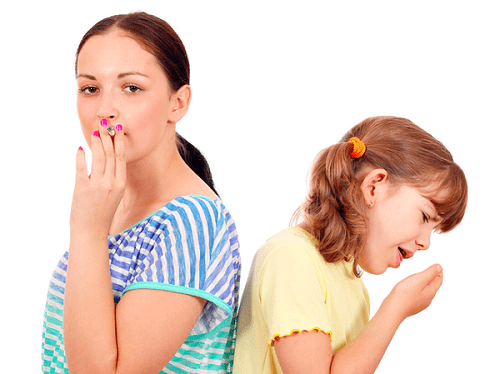
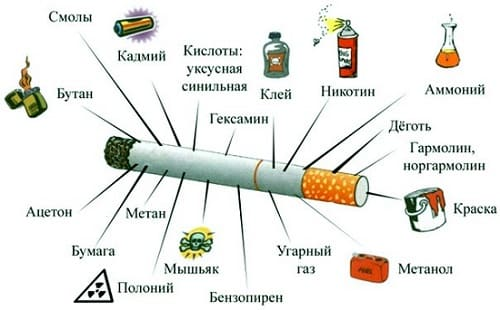
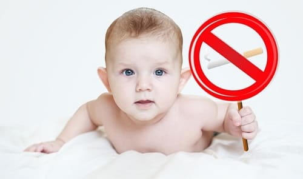

КУРЕНИЕ: ОПАСНОСТИ ПАССИВНОГО КУРЕНИЯ

Мы считаем, что курение рядом с детьми должно приравниваться к плохому обращению с детьми. Подсчитано, что каждый год в Америке примерно 30—40 миллионов детей и подростков подвергаются пассивному курению. Табачный дым содержит сотни химических веществ, которые, как известно, являются токсичными и вызывают рак у людей. Среди них — бензол, формальдегид, мышьяк, окись углерода и многие другие.
КАК ПАССИВНОЕ КУРЕНИЕ ВРЕДИТ ЗДОРОВЬЮ ВАШЕГО РЕБЕНКА
Многие нарушения здоровья у младенцев и детей связаны с влиянием пассивного курения:
- у младенцев, чьи матери курили во время беременности и после родов, больше риск развития синдрома внезапной детской смерти;
- матери, которые курили во время беременности, с большей вероятностью родят детей с низкой массой тела при рождении;
- пассивное курение увеличивает риск развития бронхита и пневмонии у младенцев и детей младшего возраста;
- у детей, подверженных пассивному курению, больше шансов заболеть астмой, аллергиями и другими респираторными заболеваниями;
- пассивное курение увеличивает риск развития у ребенка инфекций уха;
- пассивное курение связано с плохой успеваемостью в школе и когнитивными и поведенческими проблемами у детей.
Запомните, для детей не существует «безопасного» пассивного курения. Любое пассивное курение может вызывать упомянутые выше проблемы со здоровьем.
КАК ИЗБЕЖАТЬ ПАССИВНОГО КУРЕНИЯ
Вот некоторые способы, как можно уменьшить или исключить пассивное курение для ребенка:
- БРОСЬТЕ КУРИТЬ, БРОСЬТЕ КУРИТЬ, БРОСЬТЕ КУРИТЬ! Если вы или кто-либо из вашей семьи курит — надо бросить. Бросить курить может быть сложно, но разве здоровье вашего ребенка не стоит того? Если вы, ваш супруг или другой член семьи в прошлом пытались бросить курить, поговорите со своим врачом о способах отказа от курения.
- НИКОГДА не курите во время беременности. Если вы задумываетесь о беременности, бросайте курить немедленно!
- НИКОГДА не позволяйте никому курить в вашей машине, даже если там нет вашего ребенка. Дым может очень долго задерживаться в ткани даже после того, как перестали курить.
- НИКОГДА не водите ребенка в ресторан или любое другое место, где могут курить. Мы бы посоветовали вам посещать рестораны, где есть отдельные залы для курящих.
- НИКОГДА не позволяйте никому курить у вас дома.
- Выясните, не курит ли няня или воспитатель вашего ребенка, и убедитесь, что они не курят рядом с вашим ребенком.

- Поговорите со своим ребенком об опасности курения. Если вы смотрите телевизионное шоу или фильм, в котором кто-то курит, используйте эту возможность как хороший момент для обучения. Расскажите своему ребенку, что человек, который курит, портит свое здоровье и здоровье других.
- Интересуйтесь социальной жизнью своего ребенка. Выясните, нет ли у него курящих друзей и не подвержен ли он риску начать курить.
- Когда вы останавливаетесь в отеле, всегда останавливайтесь в номере для некурящих.
СОВЕТ ДОКТОРОВ СИРС: КУРИТЕ СНАРУЖИ
Родители часто спрашивают: «Нормально, если я буду курить снаружи дома, где мой ребенок не может подвергаться пассивному курению?» Мы всегда отвечаем этим родителям, что им надо бросить курить. Однако если вам необходимо покурить, курите снаружи дома. Важно знать, что дым не парит в воздухе. Он оседает на одежде, остается на руках, пальцах, губах, волосах и во рту курильщика. Дым может держаться на этих поверхностях долгое время, значительно дольше после того, как курильщик вернулся в помещение к детям. Если вы должны курить, полностью переодевайтесь после курения, мойте все участки кожи, которые контактировали с сигаретой или дымом: в основном это руки, пальцы и губы. Это ограничит контакт ребенка с табачным дымом, след которого мог остаться на одежде и теле курильщика.
|
Запомните, не существует «безопасного» пассивного курения. Дети более восприимчивы к токсичным веществам, содержащимся в табачном дыме, чем взрослые. Даже если вы, возможно, не видите его, табачный дым может быть очень опасен для легких вашего ребенка.

Здоровье ребенка от докторов Сирс / Сирс У. и др.